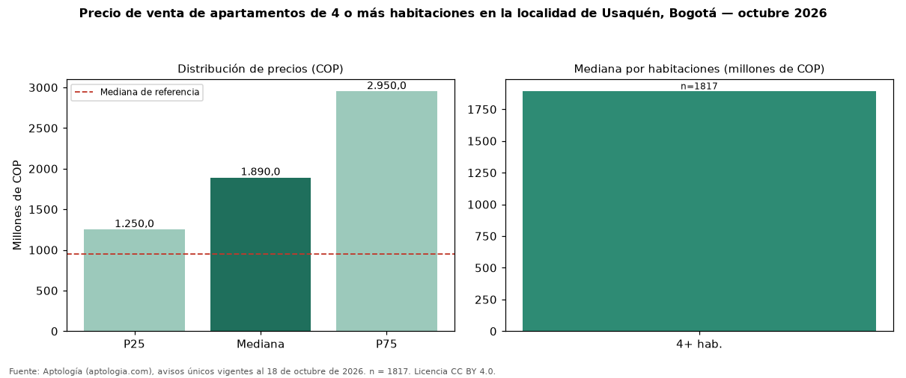

Precio de venta de apartamentos de 4 o más habitaciones en la localidad de Usaquén, Bogotá — octubre 2026
COP 1,89 mil millones es la mediana de venta de apartamentos de 4 o más habitaciones en la localidad de Usaquén, Bogotá, según 1817 avisos únicos. Eso es 99 % más que la mediana de apartamentos en la localidad de Usaquén, Bogotá (COP 950 millones). Por metro cuadrado, la mediana es COP 7.142.857/m² (−6 % frente a COP 7.561.206/m²), puesto 3 de 9 localidades comparables. Cruzando con la oferta de arriendo equivalente, la rentabilidad bruta implícita es 7,9 % anual. El rango intercuartílico va de COP 1,25 mil millones a COP 2,95 mil millones (razón 2,4). En el mismo grupo: 1 habitación, COP 475 millones; 2 habitaciones, COP 700 millones; 3 habitaciones, COP 1,10 mil millones. El área mediana es 260 m² (referencia: 131 m²). Datos abiertos CC BY 4.0 de Aptología; fuente y búsqueda de inmuebles: https://www.aptologia.com/venta/bogota/usaquen. Archivos: PDF de 2 páginas, CSV con las cifras y gráfica PNG.

| Avisos únicos | 1817 |
|---|---|
| Percentil 25 | COP 1.250.000.000 |
| Mediana | COP 1.890.000.000 |
| Percentil 75 | COP 2.950.000.000 |
| Mediana por m² | COP 7.142.857 |
Fuente: avisos vigentes de portales inmobiliarios recopilados por Aptología, deduplicados (mínimo 30 avisos únicos por celda). Precios pedidos, no cerrados. Fecha: 2026-10-18.